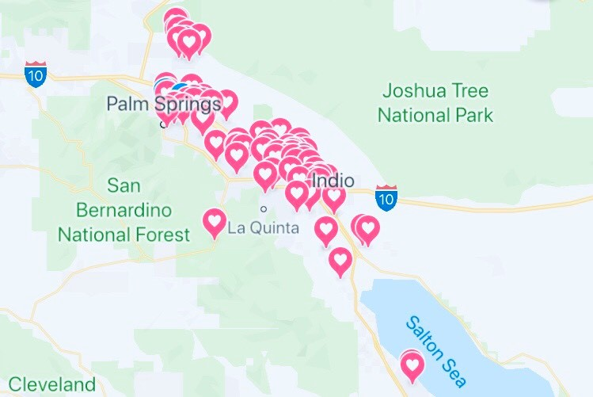

I've written across the ed beat at federal, state and local levels, but my first commitment is to writing impactful stories through cultivating relationships with sources. I'm a stickler for attending board meetings, parent events and high school football games.
I currently cover three public school districts (83 schools) and one community college in the Coachella Valley for The Desert Sun, a daily newspaper in Palm Springs, CA.
